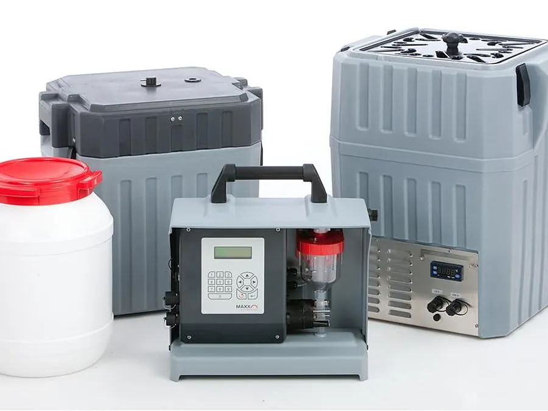

Préleveurs · Portables
TP5 PPréleveur portable modulable à pompe à vide
Le préleveur portable modulable des campagnes d’eaux usées. La tête de commande s’utilise seule sur un flacon, sur une base isotherme ou dans une enceinte réfrigérée, sur batterie 12 V ou sur secteur.
- Volume
- 20 à 350 ml
- Précision
- < 2,5 % ou ± 3 ml
- Flaconnage
- 1 × 10 l à 24 × 1 l
- Normes
- ISO 5667-10 · EN 16479
Idéal pour
- Bilans 24 h
- Campagnes de mesure
- Réseaux d’assainissement
- Asservissement au débit
- Sites sans secteur
LeasingDisponible à l’achat ou en leasing, par mensualités. Comment ça marche
Points forts
Un seul préleveur qui s’adapte à chaque campagne : du simple bidon à la base réfrigérée de 24 flacons.
- ModulableTête seule, base isotherme mono ou multi-flacons, enceinte réfrigérée ou glacière.
- Sur batterie ou secteurBatterie 12 V intégrée, batterie externe ou secteur en recharge tampon.
- Jusqu’à 2 000 échantillonsPar charge de batterie, selon les conditions ambiantes.
- Version glacièreUn préleveur réfrigéré mono-flacon léger et économique.
- Normes de prélèvementConforme ISO 5667-10 et EN 16479.
- Peu d’entretienConception simple et robuste, IP65.
Principe de mesure
La pompe à vide met la chambre de dosage en dépression : l’échantillon est aspiré jusqu’à la chambre, qui fixe son volume, puis libéré dans le flacon.
12 programmes utilisateur, prélèvement en fonction du temps, du débit ou d’un événement, et prélèvement manuel à tout moment sans interrompre le programme.
- Hauteur d’aspiration de 6,5 m, 8 m en option
- Vitesse d’aspiration > 0,5 m/s jusqu’à 5 m
- Programmes sauvegardés jusqu’à 5 ans
Applications
Pour les échantillonnages d’eaux usées en campagne.
- Bilans 24 hPrélèvements asservis au débitmètre, échantillons conservés au froid.
- Diagnostic des réseauxCampagnes sur plusieurs points, sur batterie.
- Rejets industrielsContrôles ponctuels des effluents.
- Prélèvements sur événementDéclenchement sur contact : niveau, alarme.
Caractéristiques
Tête de prélèvement et bases au choix.
| Principe | Pompe à dépression |
|---|---|
| Volume d’échantillon | 20 à 350 ml |
| Précision | < 2,5 % ou ± 3 ml |
| Hauteur d’aspiration | 6,5 m, 8 m en option |
| Tuyau | PVC, 5 m, Ø intérieur 10 mm, lest inox ; 20 m au maximum |
| Intervalle | 1 min à 99 h 59 min |
| Flacons | 1 × 10 l, 1 × 25 l, 2 × 13 l, 4 × 5 l, 16 × 1 l, 24 × 1 l (PE) |
| Coffret | PE/PC, IP65 |
|---|---|
| Entrées | 1 analogique 0/4-20 mA, 2 TOR |
| Alimentation | Batterie 12 V 7,5 Ah ; secteur ; batterie externe 12 V 90 Ah |
| Autonomie | Jusqu’à 2 000 échantillons par charge ; environ 49 h en réfrigéré sur batterie 90 Ah |
| Poids | Tête env. 10 kg · base isotherme env. 11 kg · base réfrigérée env. 25 kg |
| Interface | Mini-USB, RS422, RS232 ; Ethernet en option |
| Normes | CE, ISO 5667-10, EN 16479 |
Téléchargements
Questions fréquentes
Les questions que nous posent le plus souvent les exploitants et les bureaux d’études.
Peut-on l’utiliser sans réfrigération ?
Oui : la tête de commande s’utilise seule sur un flacon, ou sur une base isotherme. L’enceinte réfrigérée et la version glacière sont proposées pour conserver les échantillons au froid.
Quelle autonomie sur batterie ?
Jusqu’à 2 000 échantillons par charge, selon les conditions ambiantes. En version réfrigérée sur batterie de 90 Ah, à 20 °C et 3 échantillons par heure, environ 49 heures.
Quelle différence avec le TP5 C ?
Le TP5 P prélève par pompe à vide, 20 à 350 ml. Le TP5 C prélève par pompe péristaltique, de 10 ml à 10 l.
Est-il conforme aux normes de prélèvement ?
Oui, aux normes ISO 5667-10 et EN 16479.